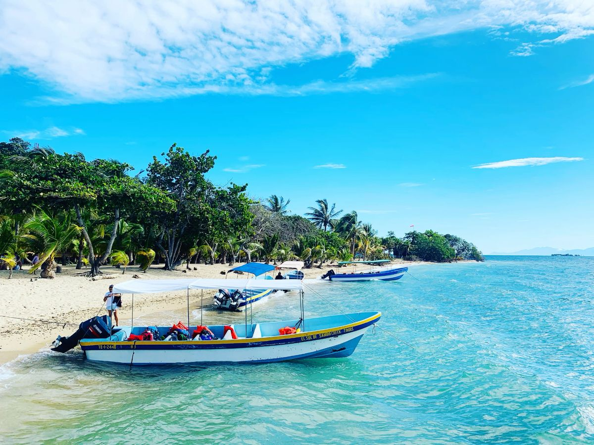
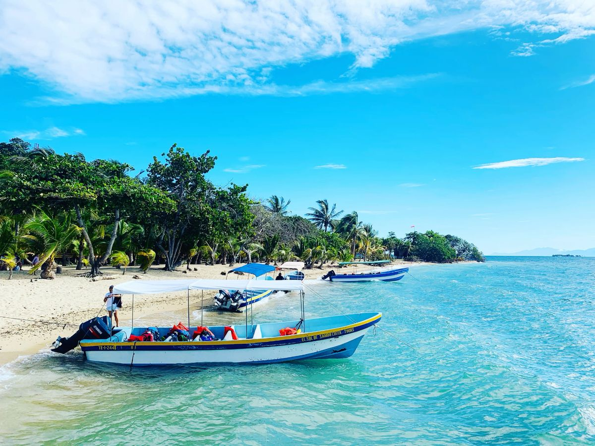

Conoce los tesoros naturales de nuestro país a través del turismo responsable.
Historia de NativaTours HN
NativaTours HN nació del amor profundo por Honduras y su riqueza natural. Fundada en 2019 por un grupo de biólogos, guías turísticos y voluntarios ambientales, la organización surgió como una respuesta a la necesidad urgente de proteger los ecosistemas del país mientras se promovía el desarrollo de comunidades locales a través del turismo sostenible.
Lo que comenzó como pequeñas expediciones a reservas naturales se ha transformado en una red de programas ecológicos y viajes con propósito que conectan a personas con la naturaleza, fomentan la educación ambiental y generan recursos para proyectos de conservación.
Cada tour que organizamos es una oportunidad para sembrar conciencia, restaurar hábitats y empoderar a las comunidades que son guardianas de nuestro patrimonio natural.
Misión
Conectar a las personas con la naturaleza a través de experiencias turísticas responsables, destinando los recursos generados a la protección y restauración de la flora y fauna en peligro de Honduras, y fortaleciendo el desarrollo sostenible de las comunidades locales.
Visión
Ser la organización líder en turismo ecológico en Honduras, reconocida por su impacto positivo en la conservación del medio ambiente, la educación ambiental y el empoderamiento de comunidades que viven en armonía con la naturaleza.